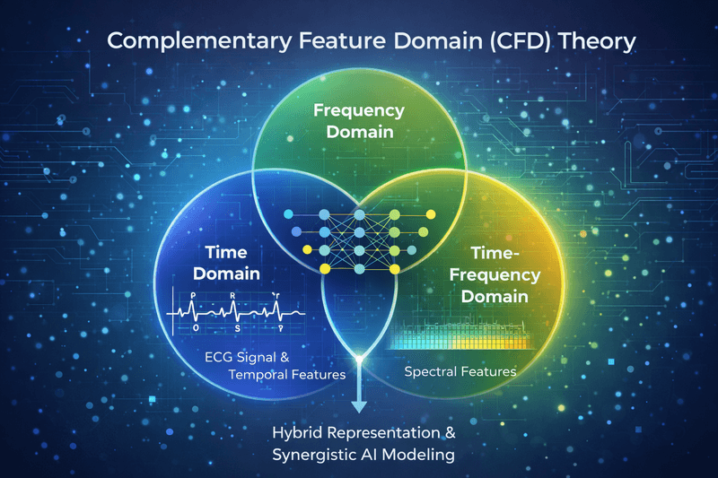

Complementary Feature Domain (CFD) Theory
Peer-reviewedWhen do several representations of the same signal add information, rather than repeat it?
Core idea
Time-domain, frequency-domain, and time–frequency representations of an ECG can carry complementary or redundant information. CFD holds that the benefit of multimodal fusion depends on the complementarity of the fused domains, not on the number of domains combined.
Reported evidence
In a peer-reviewed study (IEEE Access, 2025), a model fusing time and time–frequency representations outperformed the time–frequency baseline across evaluation metrics under bootstrap and Bayesian analysis, while adding the frequency domain produced no further improvement. A targeted ablation supported the interpretation of representational redundancy.
Hypotheses & open questions
How far the complementarity pattern generalizes beyond the ECG datasets and architectures studied, and how complementarity can be measured information-theoretically and enforced during training. The latter is a focus of the NIH-funded ORBIL-AI project.